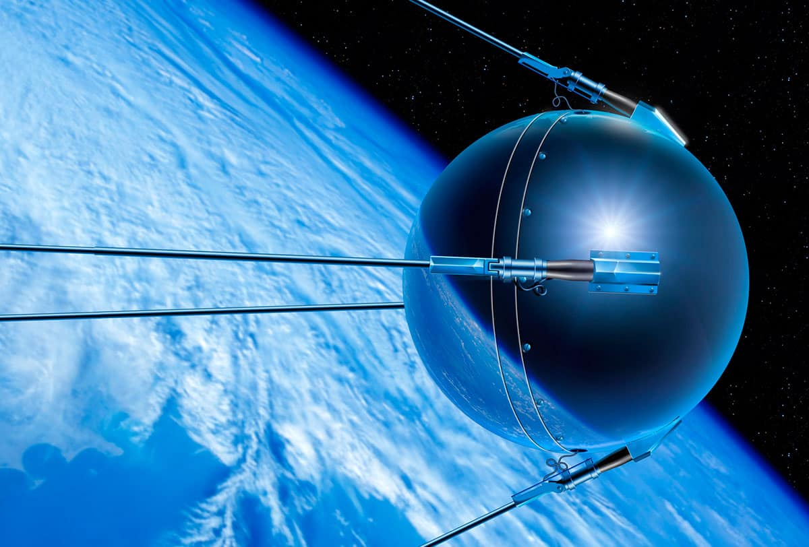
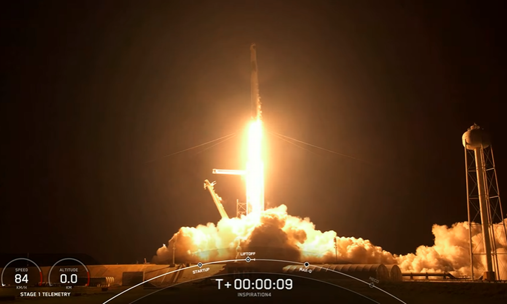
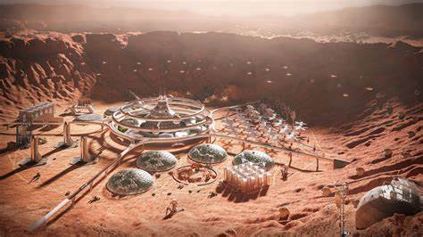
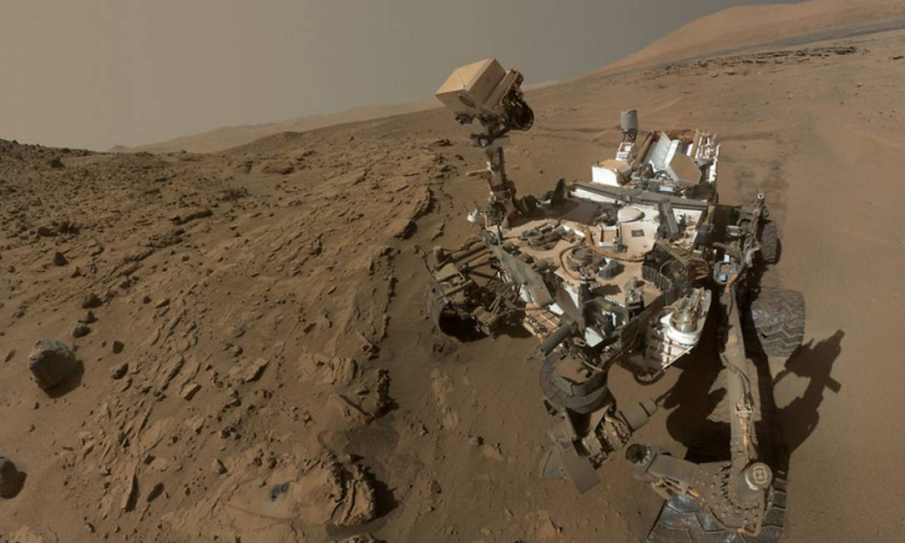

Explorando o Universo: Viagens ao Espaço
As viagens espaciais sempre fascinaram a humanidade, desde as primeiras observações de estrelas até as mais recentes missões interplanetárias. Graças à tecnologia avançada e à determinação de explorar o desconhecido, hoje podemos sonhar com um futuro onde viagens ao espaço sejam uma realidade comum.
O Começo das Viagens Espaciais
As viagens espaciais tiveram seu marco inicial em 1957, com o lançamento do satélite soviético Sputnik 1, o primeiro objeto humano a orbitar a Terra. Poucos anos depois, em 1961, Yuri Gagarin se tornou o primeiro ser humano a viajar ao espaço. Esses eventos deram início à corrida espacial, que impulsionou avanços tecnológicos rápidos. Graças aos primeiros foguetes e espaçonaves, foi possível também pisar na Lua em 1969, com a missão Apollo 11. Esses feitos históricos são lembrados como os primeiros passos de uma jornada que continua a evoluir até os dias de hoje. 
Turismo Espacial: A Nova Fronteira
Com empresas privadas como SpaceX, Blue Origin e Virgin Galactic liderando a corrida, o turismo espacial está se tornando realidade. Já é possível reservar lugares em espaçonaves que levam pessoas comuns à órbita da Terra por curtos períodos. Essas viagens prometem não apenas experiências únicas, como a ausência de gravidade, mas também a chance de observar a Terra de uma perspectiva totalmente nova. Embora os custos ainda sejam altos, avanços futuros podem tornar essas experiências acessíveis a um maior número de pessoas. 
O Futuro das Explorações Interplanetárias
O próximo passo nas viagens espaciais é a exploração de outros planetas. Marte, o planeta vermelho, é o principal alvo das pesquisas atuais. Com a missão Mars 2020 da NASA e as futuras missões da SpaceX, os cientistas esperam estabelecer colônias humanas em Marte nas próximas décadas. Além de Marte, há planos ambiciosos para explorar luas de Júpiter, como Europa, e avançar em direção a sistemas estelares próximos. Essas missões representam um grande passo na compreensão do universo e na busca por vida fora da Terra. 
Todos se ajudando
A Importância da Cooperação Internacional
A exploração espacial não é uma tarefa que pode ser realizada por um único país. A cooperação internacional tem sido essencial para o sucesso de muitas missões. Um exemplo notável é a Estação Espacial Internacional (ISS), um projeto conjunto entre os Estados Unidos, a Rússia, a Europa, o Japão e o Canadá.
Além de compartilhar custos e conhecimentos, a colaboração permite que cientistas de diferentes culturas trabalhem juntos para resolver problemas comuns. Essa união de esforços também ajuda a promover a paz e o entendimento entre as nações.

Desafios Técnicos e Humanos nas Viagens Espaciais
Embora as viagens espaciais sejam uma realização impressionante, elas apresentam desafios significativos. Um dos maiores é a radiação espacial, que pode causar sérios problemas de saúde para astronautas em missões de longa duração. Além disso, há o impacto psicológico do isolamento e da convivência em espaços apertados por longos períodos.
Outro desafio é o desenvolvimento de tecnologias capazes de transportar suprimentos suficientes para missões de colonização e garantir a sobrevivência em ambientes hostis. A solução para muitos desses problemas pode estar na bioengenharia e na construção de espaçonaves mais eficientes.

Energia não e infinita!
Energia e Sustentabilidade no Espaço
A sustentabilidade é um dos principais desafios das viagens espaciais. Abordar como as espaçonaves podem gerar energia, como painéis solares avançados e sistemas de reciclagem de recursos, será essencial para missões de longa duração. Além disso, explorar como minerar recursos em asteroides e outros corpos celestes pode revolucionar a exploração espacial e diminuir a dependência de materiais terrestres.

Inteligência Artificial na Exploração Espacial
A inteligência artificial (IA) desempenha um papel cada vez mais importante na exploração espacial. Robôs autônomos, como o rover Perseverance, já estão coletando dados em Marte. No futuro, a IA poderá ajudar em tarefas como navegação interestelar, análises em tempo real e até na construção de habitats em outros planetas, reduzindo os riscos para astronautas humanos. 